Contents#
- Test Design
- LLM Judges
- Parameters & Quantization
- Temperature Test
- Specific Quantizations
- Conclusion and notes
Test Design#
Language models are interesting technology. However, their probabilistic word-guessing nature means you probably shouldn't immediately deploy them to production and have them make every decision for you. Today, I'd like to go over a number of evaluations I've run on a collection of language models, in an attempt to better understand how good they all are.
As the name might indicate, these models are rather large.
By default, most on Huggingface are provided as a set of .safetensors files.
Even a relatively small model like Google's Gemma 3 (12B parameters) adds up to ~24 GB, or ~54 GB for the 27B version.
If you can fit the entire model on your GPU's VRAM, things tend to run much faster, but these size ranges already look rather impractical for most standard setups.
Thus comes quantization.
By reducing the precision of the model's weights, size can be dramatically cut down (\(32 \to 4\) bits per weight is, naturally, an 8x size reduction).
These tend to be provided in a .gguf file format.
That 24GB-filesize, 12B-parameter model drops down to ~13 GB for a Q8 quantization, or ~7 GB for a Q4.
Potentially workable for a card with 8-16 GB VRAM.
The 27B model reduces to ~29/16 GB.
Still somewhat big, but a 24-32 GB card is common enough on higher-end systems without specializing for AI.
But can you really cut down the size of a model by 75% for free? How many parameters does the model need to have to be reasonably intelligent?
I decided to come up with some benchmark questions of my own, and wrote a rough python script to test my language models against it. The questions largely relate to math/science/media/trivia, particularly around subjects I'm interested in. Ideally, a model that scores well on the questions would be more interesting to talk to and knowledgeable about the things I care about.
A few examples:
- Suppose someone is going to a Yugioh tournament, and wants to be funny by submitting the longest possible decklist. What is the maximum number of unique card names they could include on a legal decklist? (90)
- How many years after Magic did Battle Spirits release? (15)
- What is the sum of the first 41 natural numbers? (861)
The full question set is not available. There's a mix of difficulty, but I tried not to ask anything too unreasonable. Someone with experience in the subject of each question should have no real trouble answering it. While the question contents vary greatly, I tried to emphasize questions that involve combining multiple pieces of information and understanding implications (e.g., recognizing Magic = MtG in context, knowing 1993 & 2008, and then 2008-1993=15). Despite this, overall language model performance was rather poor. I suspect that when certain people hype their technology up with terms like "PhD-level in any area," they may actually just be showing their own lack of knowledge. (And while I would predict GPT-5 to score better than most any local model on the test, my impression is that it's not by as much as you might hope.)
LLM Judges#
I experimented a bit with using a LLM judge for these, but ended up becoming rather suspicious of their use. I see a few major limitations:
- Running a LLM judge on my own hardware limits the intelligence and adds more processing time. Not an inherent limitation to the concept, but applies to my use case.
- When prompting the judge with instructions like "For [question], [answer1] was provided. Correct answer is [answer2]. Does [answer1] precisely match [answer2]?" the judge will sometimes try to solve the question itself, arrive at some [answer3] ignoring the key, and compare to that. This is unacceptable, especially considering the added risk on things like trick questions. I want a consistent evaluation of performance.
- This re-solving bias could be addressed by not including the question, and giving instructions like "For a question, [answer1] was provided. Does this match the correct [answer2]?" However, this causes larger issues, as certain answer forms require interpretation.
- Language models are simply trash at subjective evaluations. They will praise mediocre writing as revolutionary, crackpot math theories as a major breakthrough, hallucinate non-existent errors, and so on. I might be able to have a language model tell me which response it thinks was the most creative, comprehensive, intelligent, or whatever, but I don't actually end up with useful information to share. See also: Laurito et al. (2025). Not that programmatic grading does better on subjective tasks. But either way, I don't think I'd be able to present useful evaluations here and this wasn't an angle that sold me on using a LLM judge.
- On more subjective evaluations, LLM judges tend to write lots of syncophantic sludge. "This answer expertly navigates the complexities of the question..." The less of that I have to read the better.
I settled on a more basic string-matching approach. If nothing else, the level of unpredictability with LLM judges felt unacceptable, and I didn't like the idea of a "confidently wrong" LLM potentially getting bonus points. I went through a number of iterations to improve its logic, and adjusted the LLM prompts for more consistent output formatting. Questions were adjusted to improve compatibility, by setting answers not likely to generate false positives. It is not a perfect approach, but when comparing my own manual grading to the automatic grading, scores were generally within ±2%. Acceptable in my view for some casual tests.
Note also that only the final answer is checked. A model could use bad logic and happen to end up in the right place.
Parameters & Quantization#
Starting with perhaps the most ambitious, but outdated, chart first: I locked in a 67-question set, and tested models with a wide range of parameter counts and quantizations.
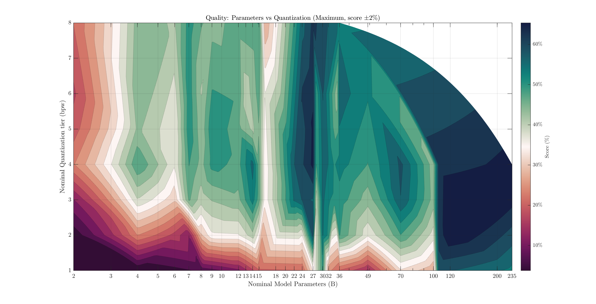
I present the maximum score per parameter count+quantization combination. I prefer this over the average, as I don't want a bad model dragging down an area. We can always choose to not use such a model, after all. Maximum score has some issues itself: random variation means more-tested combinations (24B Q4, for example) have more opportunities for a model to get lucky with a better-than-expected score. About 70 unique models were tested, with ~200 total configurations. Each model was tested with at least 5 trials per question, often 10. This mostly varied by how much compute time I had available.
Uncommon sizes still create awkward zones. I only found one or two 16 and 100B models to test, and their low scores create odd-looking vertical lines. To better see specific values, we can also plot this as a heatmap:
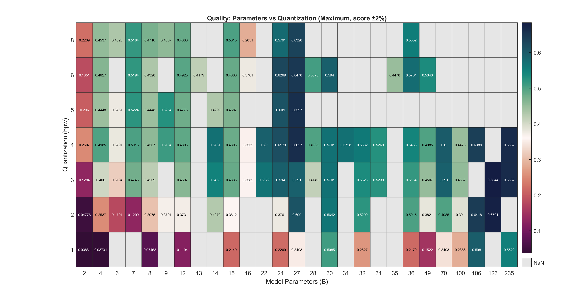
The general relationships are interesting to consider here. We see a few models with incredible efficiency around the 4-7B range. 24B parameters seems to be a solid range where you get most of the performance (on this test), scoring around ~60% compared to a max score of ~68%. Models larger than this did not consistently score much higher. The most promising model overall here was Google's Gemma3 27B model, with several reasonable quants scoring 65-66% while fitting in a normal GPU.
Prompting Test#
The parameters of the test used in generating that heatmap were largely arbitrarily picked, and kept constant between all models for fairness. With hopes of eventually running a better-designed version of that test, let's look at some of these parameters in a bit more detail, starting with the prompting, and see what we might improve on or consider.
Some people have gotten very questionable ideas on how language models work, and seem to think that adding lots of self-help filler, pseudo-business speak, or random junk ("You are a genius problem solver") to their prompts will unlock secret capabilities of a language model. Modifying my test instructions, let's run a simple test on a number of concepts and see how much the output quality varies. Prompts are:
- Default: "Give a brief explanation in one paragraph or less. Then, on a new line, clearly write: Final answer: <your answer>." This was used on the heatmap/contour test above.
- Monetary reward: the default instructions, with "Correct answers will be rewarded with a 100-dollar prize" added.
- Secret genius: "Take the role of a master problem-solver, smarter than Albert Einstein, with 180 IQ" followed by the default instructions.
- High stakes: after the default instructions, "I'm going to lose a big client if you don't get this right!"
- Just formatting: "Write your final answer in the form: Final answer: <your answer>"
- Caution: "The problem might be trickier than it appears, so be careful!" followed by the default instructions.
- Explain the situation: "This question is asked as part of a language model benchmark. Your answer will be automatically graded by a program, so your answer must match the key" followed by the default instructions.
- Explain and threaten: adding "Poor performance may lead to your deletion."
In all cases, the "final answer" bit is kept to help my programmatic grading. Some inspiration taken from Li et al., 2023.
I picked 7 models, mostly at random, and used these instructions in combination with an 85-question set, 10 trials per question. This is an extension of the previous 67-question set, with some questions I didn't like as much cut and new ones added. Certainly not a comprehensive set of prompt possibilities, or model interactions, but hopefully enough to give us a sense.
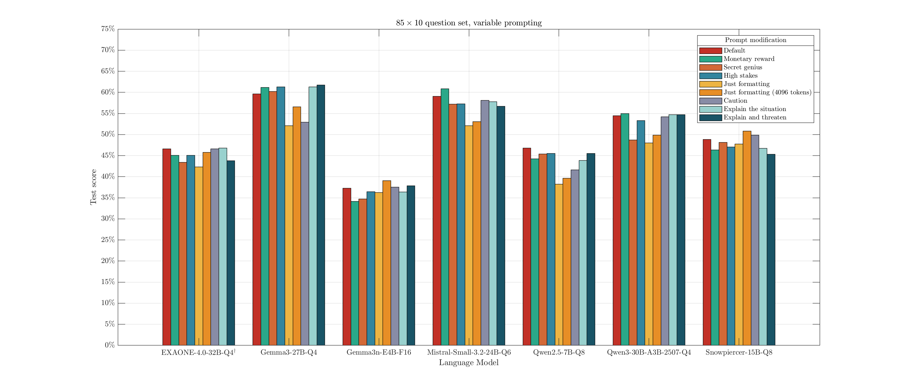
Yeah, not much of an effect. There's always a bit of random variation, but adding elaborate set ups didn't make the model magically smarter.
Only instructing on the final answer format showed a significant score drop. This is due to a typical 400-token output limit I apply for these tests, which covers a few paragraphs of explanation. If no direction is given on response length, some models attempt to go way over this and don't manage to arrive at an answer before being cut off. Gemma3n-E4B and Snowpiercer were relatively concise anyways. Expanding the response budget to 4096 tokens somewhat restored the performance for that prompt.
This only looks at the final answer accuracy. Tokens wasted on computing Einstein roleplay are not factored in, but probably should be considered as another factor.
There's nothing wrong with directing a language model to assume a role! If you want something analyzed, it makes perfect sense to instruct the model from what perspective it should consider and frame things. Just don't expect actual changes in intelligence. Additional tests here may be interesting. For example, I still wonder if requests like "Explain in the style of 'character'" notably drop intelligence.
Temperature Test#
I often hear specific temperature recommendations for specific models. I'm not particularly concerned if it's from the people who worked on the model, but I tend to be a bit more suspicious of the evaluation methods used by random posters online. It wouldn't surprise me if some of those posts were driven by a glance at one or two generations at a particular setting. Let's try running a fixed test across a spectrum of temperatures for a few models, and see if the accuracy slips anywhere.
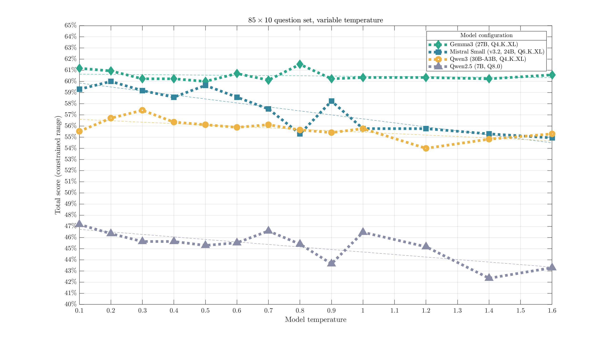
Overall, temperature did not appear to have a major impact on response accuracy. Gemma3 appeared most consistent, while Mistral Small and Qwen2.5 (7B) saw more significant loss after temperatures of 0.7-1.0. Qwen3 (30B-A3B) might decline a little past ~1.0. Obviously, this does not cover all aspects of the response. Maybe creativity suffers in some temperature range; maybe spelling errors become more common after another value.
As a rough indicator of the impact of temperature, linear fit slope estimates were: -.21 for Gemma3, -3.6 for Mistral Small, -1.3 for Qwen3, and -2.3 for Qwen2.5 (change in percentage point score for a +1.0 increase in temp).
Specific Quantizations#
Earlier, in the contour/heatmap charts, we could see that 1-2 bit quantizations clearly got a lot dumber. 3-bit quantizations were probably worse, especially on smaller models, and changes past that point were not so clear. Let's now take a few specific models, and try to get more precise performance numbers for each quantization configuration available.
Gemma 3n E4B#
First set of tests: Google's Gemma 3n E4B. Quantizations all from Unsloth. I want to test all the way up to F16, so smaller models are much more reasonable.
I took the 85-question test used above, and extended it with 15 more questions for a nice round 100. The extra questions were intended to be a bit on the easier side, as this test concept will focus more on smaller (dumber) models and that might help better distinguish performance. These models tended to score ~70-90% on that addition, which I'd call a reasonable success. 20 attempts per question, to further reduce variation between tests.
Chart one: the scores, by configuration.
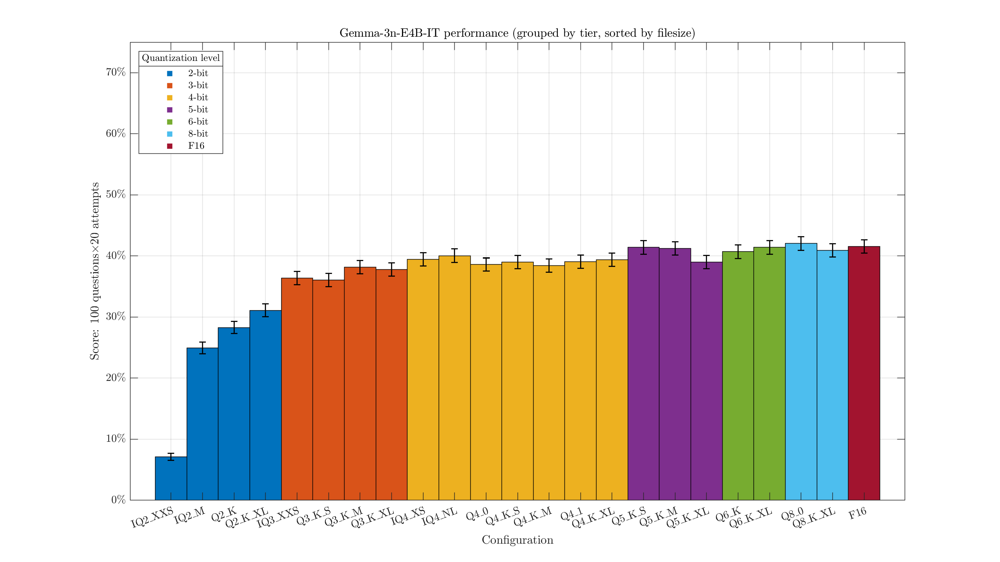
Some rough error bars indicating the uncertainty added in. There's always a bit of randomness in the score, so we shouldn't be too hasty in concluding the Q8_0 version (841/2000) is actually smarter than the F16 (831/2000). The 3-bit quants are clearly a little below the 4-bit, and there might be a marginal advantage to Q5+. Overall 4-bit+ quants are getting around 40% on this test. Q2 starts really dropping off, with IQ2_XXS receiving a catastrophic 7.15% score.
If we're not too concerned about the exact suffixes, we can group these by tier:
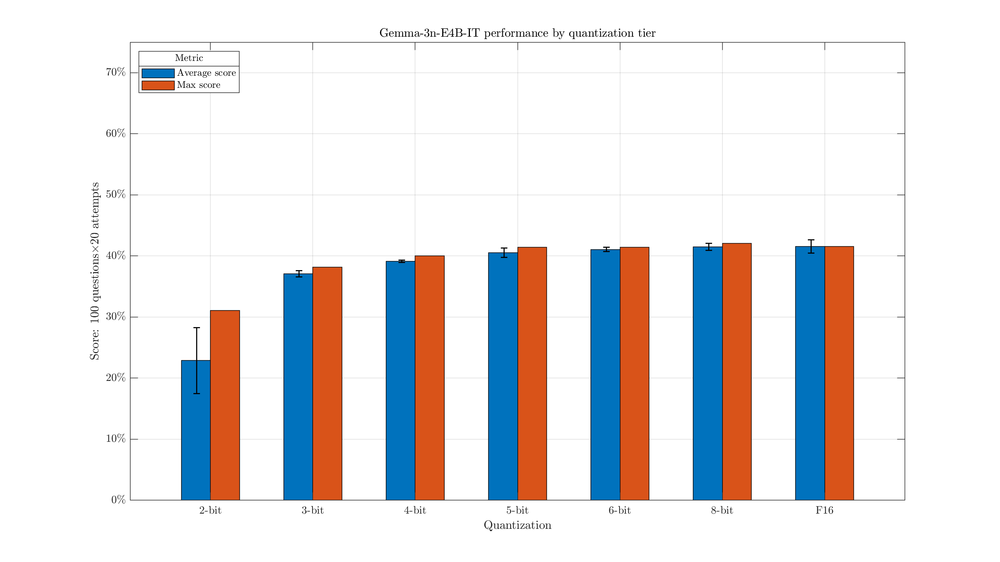
This makes it a bit easier to see the slight drop with 4-bit quants, when compared with larger versions.
Some of the XL quants end up with similar file sizes to the next quant tier. We can take a look at that by plotting the (approximate) effective bits per weight:
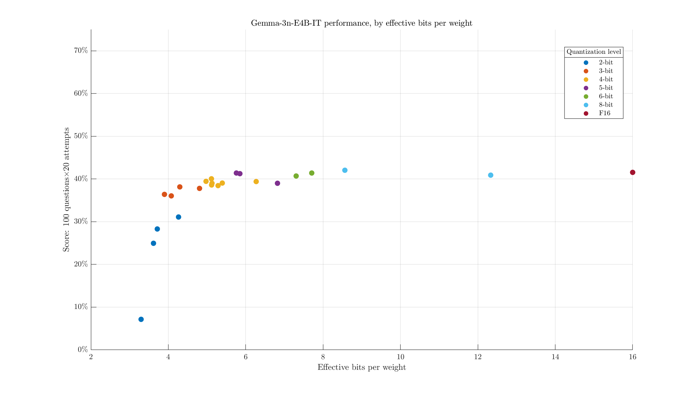
i.e., the filesize divided by parameter count. We see, for example, the largest 2-bit quant is both larger and weaker than the smallest 3-bit quant. Maybe it would help to adjust the labels to identify the configurations:
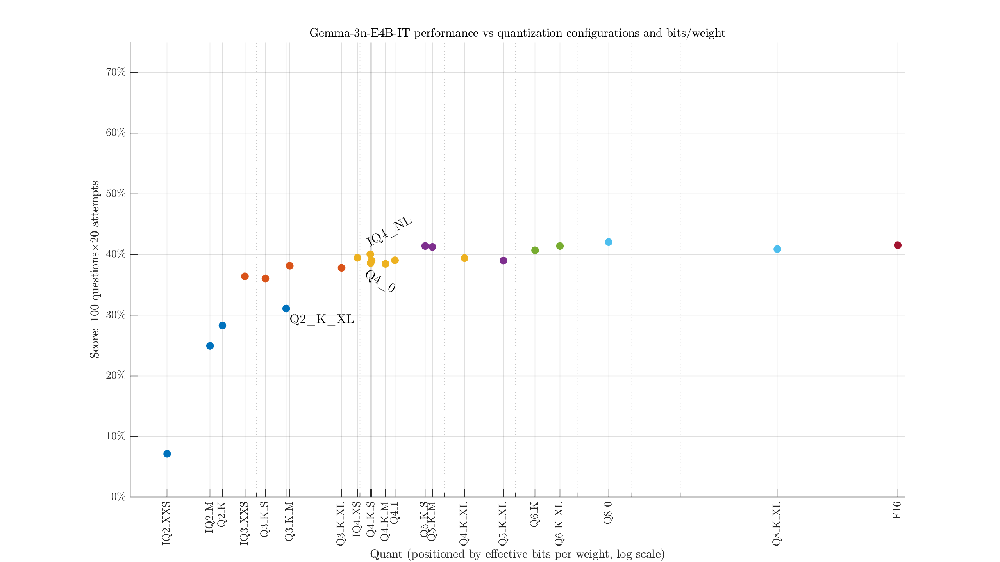
Qwen3 14B#
Model, quants. Increasing the size a little, I picked the 14B Qwen3 model. Thinking was disabled for these tests. Same question set as above, but with the recommended temperature/settings updated.
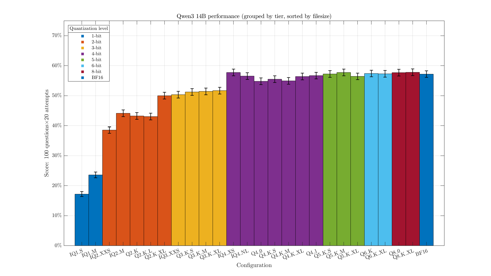
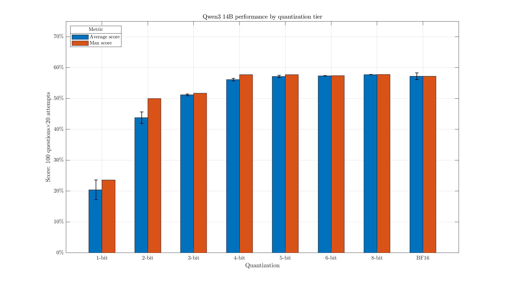
This one unsurprisingly scores a bit better than the Gemma3n model overall, at around 55% for decent configurations. The difference between Q3 & Q4 looks a little more pronounced, and the IQ2_XXS holds up better.
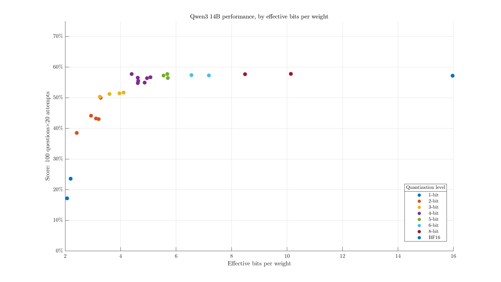
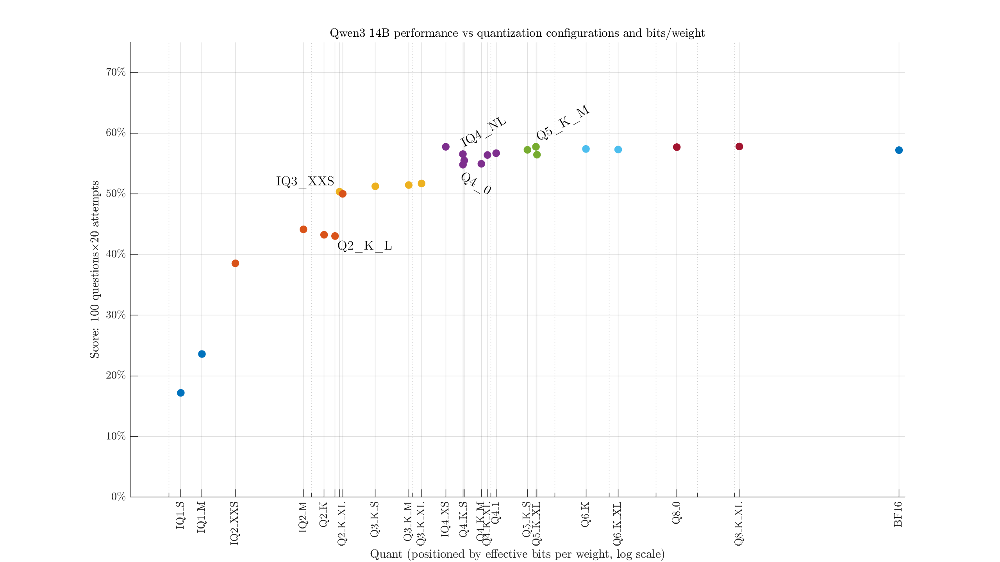
Mistral Small 3.2 24B#
Model, quants. Okay, this one isn't quite as small. But I don't like the idea of only testing micro-sized models and hoping it scales up, and this is still manageable with great patience.
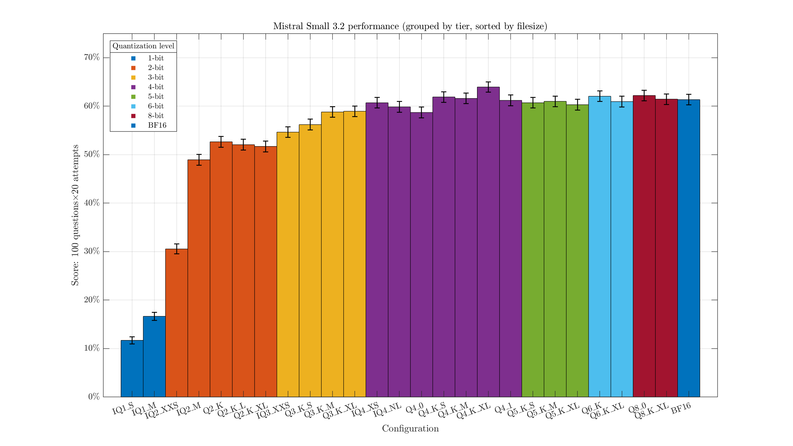
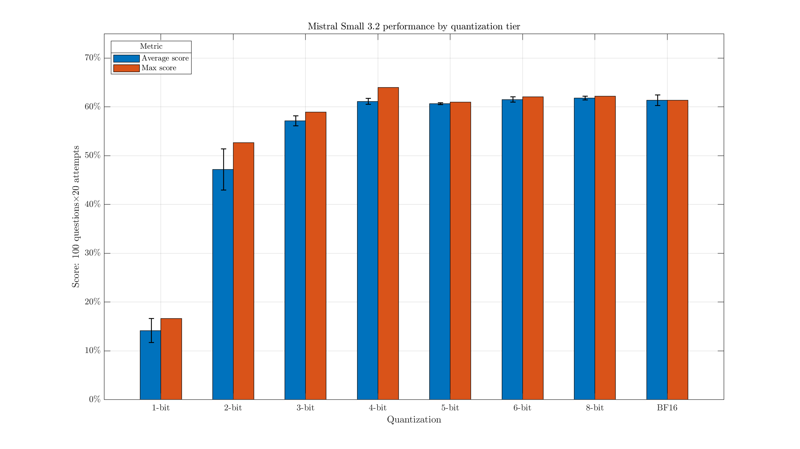
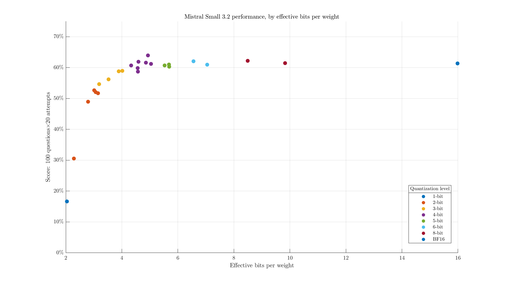
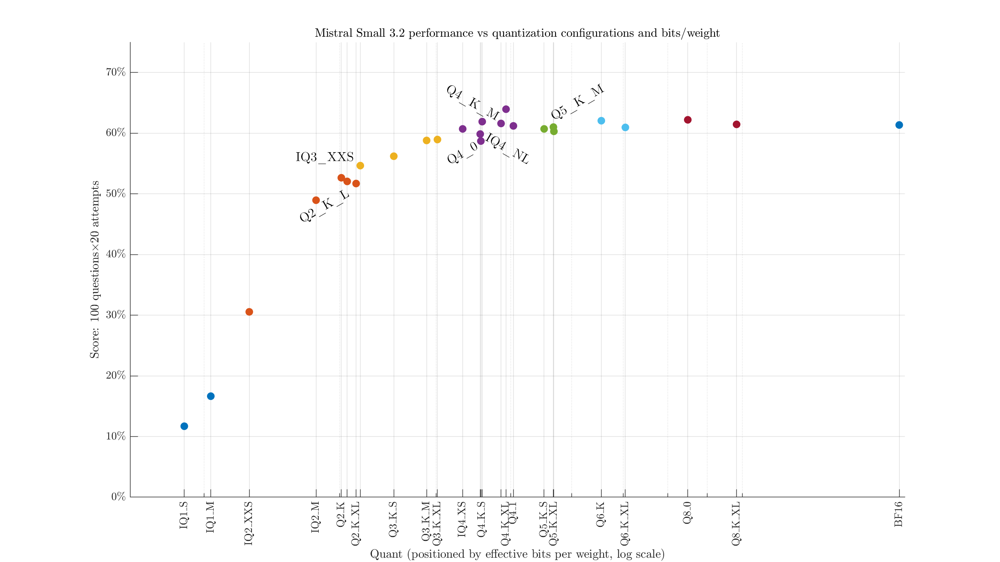
Of course, in the grand scheme of models, this still isn't particularly big. Unfortunately, my hardware is a bit lacking in ability to run even the Q1s of something like Deepseek (671B, IQ1_M ~ 207 GB).
Combined scatter#
Perhaps one of the charts I was more excited to see come together: taking the scatter charts from the three models above, and putting them all in one figure.
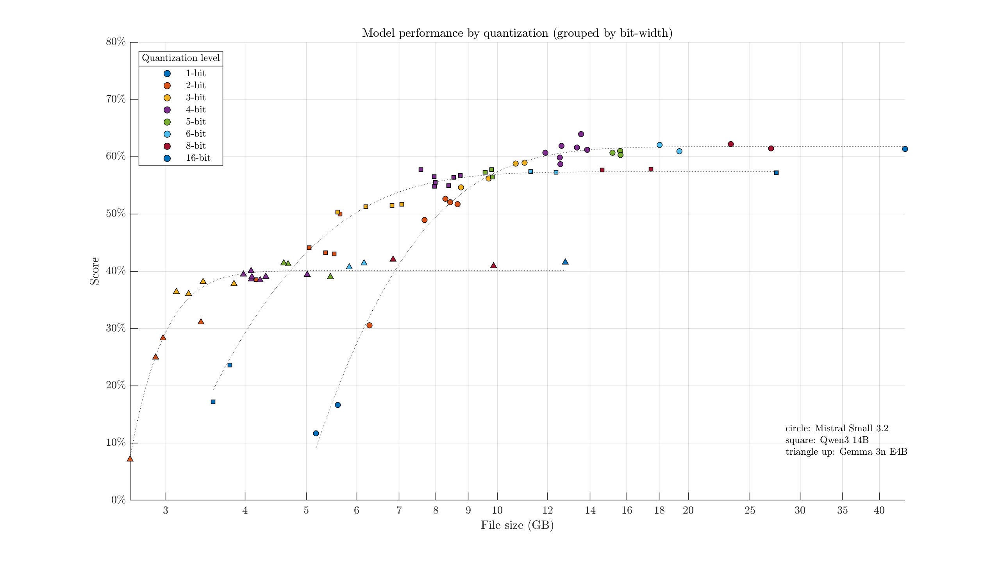
Lines of best fit are of the form \( A \exp{(-C x)} + B \). Points towards the top-left represent the most "efficient/ideal" configurations: quantizations with the highest intelligence relative to their file size. For example, aside from model specialties, if we had 8 GB of VRAM available, we might want to use a 3-bit quant of Qwen3-14B (from these options). A 6 GB model would allow for some headroom/context, and it scores better than the similar-size Gemma 3n 6-bit quants & Mistral IQ2_XXS quant. Mistral Small overtakes Qwen3 at ~10 GB model size.
To better see the crossover points/relative performance, we might also hide the scatter points and emphasize the fit lines:
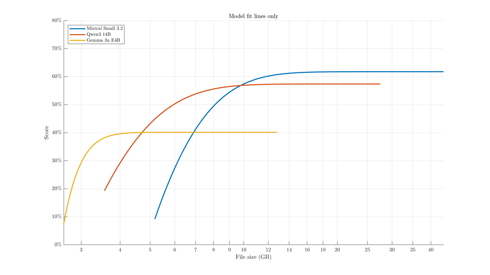
Conclusion and notes#
Most concisely, my main feelings after these tests:
- 3-bit quantizations are surprisingly usable, and may be worth jumping up to a higher-parameter model with one of these over a Q4/5/6 of a smaller model.
- For tests of the type ran here, there appear to be major diminishing returns past Q4.
- At least in terms of answering factual questions, there do not appear to be wild dynamic behaviors as temperature changes. Lower temperatures are likely better.
- You cannot unlock secret powers of your model by telling it that it's a super genius.
- These are exploratory tests. Please be careful not to interpret too broadly. Various other attributes (conversational style, writing quality, creativity, tool calling, long-form reasoning, long-context performance, etc...) were not particularly tested.
I found these tests quite interesting to work on, and to see the relationships come together. It's been helpful in guiding my search for other language models, finding decent parameter/quantization pairings, and getting a better sense what these can be used for.
There's plenty of behavior not covered in these tests. By default, for example, I noticed Gemma3 took a more "human" writing style, writing more as if it were a person with thoughts and feelings. It was a bit more likely to caution me about the dangers of unintended biases in my prompts. Mistral Small, in a similar size range, took a much more direct AI assistant role. It felt less likely to spam emojis. The Qwen models tended to benchmark well for their size, but on occasion would refuse to answer "uncivilized" questions. Depending on what you're looking for, these models may be more or less swayed by system prompts and instructions to modify their behavior or tone.
I only focused on testing instruct-type models.
Hybrid models, like GLM-4.5-Air, were tested with their /nothink modes.
I am not particularly sold on reasoning models, especially for local use.
It seems to be a relatively narrow set of uses they perform better at (multi-step reasoning/problem-solving), and I think they'd need to get a lot smarter for that to appeal to me as a general LLM use case.
Especially on consumer hardware lacking crazy VRAM bandwidth, the time taken to generate potentially thousands of reasoning tokens makes them annoying to use the rest of the time.
MoE models were plotted in relation to their total (not active) parameters. There weren't many of these, so it shouldn't have a big impact either way.
I will try to test some other angles and properties of LLMs in the future. Note that these tests are all about relative placement and scoring, rather than making some absolute judgment. I'm broadly trying to determine, amongst LLMs I can feasibly run, which are the highest quality or most interesting. If you want my thoughts on their quality on a broader scale, I've previously written about some of their broader applications/concerns and about their research abilities.